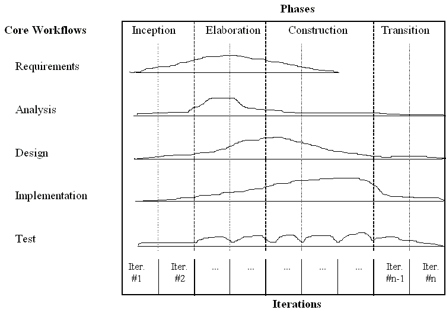

Why Agile Processes?
You may be asking yourself, why do I need to learn agile processes? It is important to align your software development lifecycle to your project. The lifecycle is the process that the software engineers will follow to create your software. When dealing with web applications it is important to understand that process of developing the software is still new and as software engineers, we are still perfecting the processes.
According to Andrew McDonald and Ray Welland, there are six criteria that makes web based application development different than traditional software development:
- Short-development life-cycle times, typically 3 months or less;
- Delivery of bespoke systems integrating software and data;
- Multidisciplinary development teams;
- More rigorous requirements analysis, including a clear analysis of business needs;
- Better testing and evaluation of Web-based deliverables;
- More focus on the issues associated with the evolution of Web-based systems. (McDonald and Welland)
These six factors are hard to fit into the traditional software engineering processes.
Software Development Lifecycles, such as the Waterfall Model, are known as heavyweight models. These models are heavy in documentation that is completed for all of the requirements upfront. The final product is decided just after the requirement gathering phase. If a requirement changes midway through development, these types of models are unable to adapt to changing customer needs.
Web Engineering Process Requirements
So what makes a Web Engineering Process (A Software Lifecycle Model that is geared towards Web Application Development) successful? A successful Web Engineering Process will address the following requirements (adapted from the six criteria listed above).
- Short Development cycles
- Changes in Requirements
- Releases with Fixed Deadlines and Flexible Contents
- Parallel Development of Different Releases
- Reuse and Integration
- Adapting to Web Application's Complexity Level (Engels et al)
In an analysis of software engineering lifecycle models performed by Gregor Engels, Mark Lohmann, Annika Wagner, they showed that an Extreme Programming, an agile process, adapts much better to the requirements than a heavyweight model, such as the Rational Unified Process.
Analysis of Rational Unified Process
The Rational Unified Process was created by Rational Software Corp which was later purchased by IBM as an iterative heavyweight software lifecycle model.There are four phases that are completed before the project can be completed. These phases are Inception, Elaboration, Construction and Transition. There are also five workflows that can be completed for each workflow. The following diagram helps to describe the process.

- Inception Phase: The projec of the scope is defined and a common vision of the project is realized.
- Elaboration Phase: Developers define the specifications during this phase.
- Construction Phase: Developers design and implement the product during this phase.
- Transition Phase: The developers deliver the system to the users, thus concluding the project.
This model is an iterative process, but is a heavy weight model because it requires the creation of many use cases and UML diagrams.
How does this model fit in with the Requirements for a Web Engineering model?
- Short Development cycles
- By keeping the development cycles short, there is a greater chance that models and documentation will not be created. The models are required for the Rational Unified Process.
- Changes in Requirements
- There should be a vision of what is going to be created at the beginning of the process, so this does not fit when there is a change in requirements. It would take more time to change the requirements and thus there would not be short development cycles.
- Releases with Fixed Deadlines and Flexible Contents
- Since there is a concrete vision of the project before the iteration begins, there is little room for the project to be flexible.
- Parallel Development of Different Releases
- Parallel development would have to occur in parallel iterations. This conflicts with the basic idea of the four phases in the Rational Unified Process.
- Reuse and Integration
- The goal is to build reusable components of the software through the use of object oriented software design methods, not functionality.
- Adapting to Web Application's Complexity Level (Engels et al)
- The process can be adapted, but only in the length of the phases or the number of iterations in one phase.
Analysis of Extreme Programming
Extreme Programming (XP) is an agile process that focuses on four concepts:
- Communication
- Simplicity
- Feedback
- Courage
Projects programmed using XP are run in short iterations where programmers work in pairs to develop code. The requirements are written by the customer in the form of user stories. The user stories are gathered, designed, developed, and tested by the pair programmers before the iteration is completed and at the end of a release cycle a version of the product is completed. Since everything is simplistic, it is fairly easy to adapt and change to the needs of the teams.
How does this model fit in with the Requirements for a Web Engineering model?
- Short Development cycles
- Short iterative development cycles is one of the main features of the process. This, along with short successive releases help to ensure that development time is short.
- Changes in Requirements
- Simple solutions are created from the user stories during each iteration. The user is involved in the creation of the software so they can influence the releases of the software through communication.
- Releases with Fixed Deadlines and Flexible Contents
- Testing is completed before the release of the project and sometimes is completed before any code is created. Since acceptance testing is completed along with the code, the product should be in working order. The entire plan is flexible so user stories can be switched from iteration to iteration.
- Parallel Development of Different Releases
- XP does not include or exclude parallel development, but does strive for communication between developers and teams. Regular meetings and communication can ease parallel development.
- Reuse and Integration
- Simplicity would help define that components should only be created ones and reused whereever needed on a web application. Continual feedback and communication between developers, users, and teams help with integration of these components.
- Adapting to Web Application's Complexity Level (Engels et al)
- Since XP uses short iterative development cycles and short successive release schedules, it is easy to adapt to any changes in complexity. Web applications are complex, but XP promotes the simplest solution for a complex problem. As the solution needs to become more complex, the code is refactored to meet those needs.
As you can see, agile processes such as XP can be tailored to meet the needs for web application development. The heavyweight methodologies can be used as long as they are adapted, but agile processes are better suited to overcome the differences between traditional software engineering practices and web application development practices.
Sources:
Engels, Gregor, Marc Lohmann and Annika Wagner. "The Web Application Development Process." Web Engineering. Ed. Gerti Kappel, et al. Hoboken: John Wiley & Sons Inc., 2006. 1-21.
McDonald A. & Welland R., 'Agile Web Engineering (AWE) Process', Department of
Computing Science Technical Report TR-2001-98., University of Glasgow, Scotland, 2 December
2001.